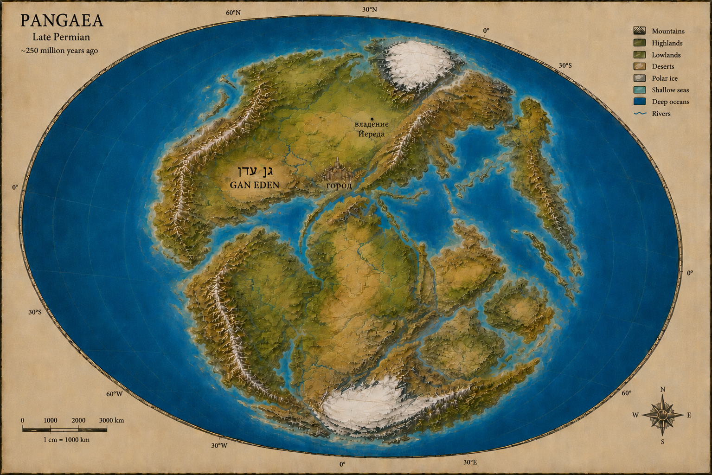

Экспонат I
Мир до Потопа

Место для реконструкции допотопной карты: города, владения, горные цепи, водные рубежи и земли, известные караванам.
В музейной версии этот лист должен работать как свидетельство мира до катастрофы: не точная география, а архивная попытка удержать исчезнувшее пространство.
Вернуться в музей
Записи посетителей